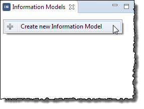
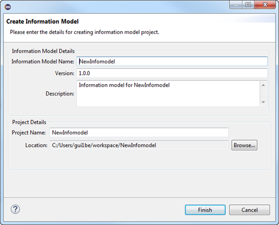
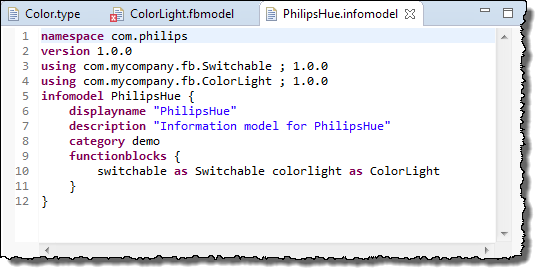
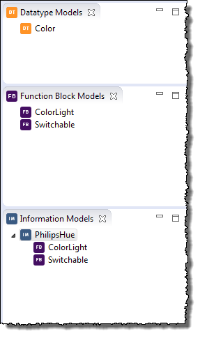

Defining an Information Model
This section details the following topics:
Creating a New Information Model
Information Models
Information models represent the capabilities of a particular type of device entirety. An information model contains one or more function blocks.
Creating a New Information Model
Prerequisites
You have create a function block model (refer to Creating a New Function Block Project).
Proceed as follows
- Right-click in the Information Models tab and choose Create new Information Model from the context menu:

The Create Information Model dialog opens:
 - Enter, e.g.,
PhilipsHueas Information Model Name. - Click Finish.
The information model DSL source file (with suffix .infomodel) is generated and displayed in the information model editor. The file contains a complete structure according the DSL syntax with the values given in the preceding step.

Editing an Information Model
Prerequisites
You have created an information model (refer to Creating a new Information Model).
Proceed as follows
Edit the information model by extending the generated source file in the information model DSL editor.
Example
-
Create a new function block model named
Switchableand update it according the following:namespace com.mycompany.fb version 1.0.0 functionblock Switchable { displayname "Switch" description "Function block model for Switch" category demo status { optional on as boolean } operations { on() off() toggle() } } -
Create a new function block model named
ColorLightand update it according the following:namespace com.mycompany.fb version 1.0.0 functionblock ColorLight { displayname "ColorLight" description "A light makes the environment bright and colorful" category hue configuration { optional brightnessLevel as int } fault { mandatory bulbDefect as boolean "true if the light bulb of the lamp is defect" } operations { setR(r as int) setG(g as int) setB(b as int) } } - Drag and drop the two created and edited function blocks from the Function Block Models tab into the information model PhilipsHue in the Information Models tab to create the reference.
 -
Update the information model according the following:
namespace com.philips version 1.0.0 using com.mycompany.fb.Switchable ; 1.0.0 using com.mycompany.fb.ColorLight ; 1.0.0 infomodel PhilipsHue { displayname "PhilipsHue" description "Information model for PhilipsHue" category demo functionblocks { switchable as Switchable colorlight as ColorLight } }